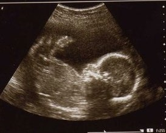

22 неделя беременности

До родов остается еще много времени, малыш с особой активностью двигается в вашем животике. А это самое радостное для мамочек! Причем, движения младенца – это не только проявление физической активности, но и определенный знак: например, создать тихую обстановку или выйти на свежий воздух.
Длина малыша: 28 см.
Вес малыша: 500 г.
На данном этапе развития ребеночек становится очень чувствительным к внешним факторам: звуку, свету, шуму и т.д. О своем недовольстве он может заявить с помощью резких движений.
Движения ребенка преднамеренны, их задача – подготовить его моторику и координацию. Кожа его является сморщенной и имеет розово-красный цвет, оставаясь при этом практически прозрачной. Конечности пропорциональны, но малыш по-прежнему очень худ, веся примерно одну седьмую окончательной массы при рождении. Развитие мозга малыша вступает в период быстрого роста и развития.
УЗИ на 22 неделе беременности
На УЗИ уже отчетливо видно, как ведет себя малыш и уже можно узнать пол ребенка. Теперь у ребенка лучше видны брови, намного лучше стали расти волосы. Они имеют белый цвет ввиду того, что пигмент еще не начал вырабатываться.
Количество нейронов с каждым днемстановится все больше, а вместе с этим улучшается и восприятие. Сейчас ребенок очень активно начинает познавать себя: он сгибает конечности, двигает ими и узнает, где находятся разные части его тела. На УЗИ можно увидеть, как он сосет свой пальчик, причем перед этим он уже выбирает, либо палец поднести к ротику, либо наклонить голову к пальчику. После того, как он родится, он сможет познавать этот мир при помощи зрения и вкусовых ощущений.
ВАШ ОРГАНИЗМ
Как правило, ощущения на 22 неделе беременности у женщины неплохие. Теперь у будущей мамы становится больше крови. Это происходит за счет того, что объем плазмы (жидкой части крови) увеличился. Стоит отметить, что плазма – это главная составляющая крови и она обладает способностью растворять кровяные тельца. По этой причине у мамочки могут обнаружить физиологическую анемию, которая проявляется низким уровнем гемоглобина и гематокрита.
ГЕМОГЛОБИН – это особый железо-содержащий белок крови сложной структуры, выполняющий в организме крайне важную функцию – газообмен и поддержание за счет этого стабильного обмена веществ. Гемоглобин – своего рода посредник между тканями и легкими в обмене кислородом и углекислым газом. Для полноценного функционирования организма количество гемоглобина должно стабильным.
ГЕМАТОКРИТ – это отношение объема эритроцитов к объему плазмы. Гематокрит – это основной признак недостатка или избытка эритроцитов в крови.
Вообще, для беременных это абсолютно нормальное явление, но показаться врачу все же стоит, для исключения настоящей анемии – пониженного уровня железа в крови. Для профилактики будущей маме нужно кушать больше продуктов, богатых железом.
Шевеления на 22 неделе беременности становятся все более частыми, чем радуют будущих родителей.
Кстати, во втором триместре у женщины заметно улучшается самочувствие и появляется сексуальное желание, другими словами, усиливается либидо. Это происходит все из-за той же крови, которая из-за своего увеличения, способствует усиленному выделению секреции во влагалище женщины. Эрогенные зоны теперь стали более чувствительны, а во время полового акта женщина без труда испытывает оргазм.
Многие боятся заниматься любовью во время беременности, но опасения напрасны, поскольку ребеночек очень хорошо защищен всеми своими оболочками и околоплодными водами. К тому же теперь не нужно предохраняться. Однако стоит выбирать позы, чтобы не сдавливать живот.
Единственной проблемой, которая может испортить ощущения на 22 неделе беременности – токсикоз. Как правило, это вторая «волна», поскольку он уже был на первых неделях и потом прошел. Теперь токсикоз может возникнуть у тех, у кого есть хронические заболевания сердечнососудистой системы, воспалительные процессы в половой сфере или ожирение.
Стоит отметить, что токсикоз на этой стадии беременности очень опасен для здоровья мамы и ребенка, поскольку он протекает совсем по другой причине и с другими симптомами. Дело все в водно-солевом балансе. Объем циркулирующей крови уменьшается, а давление повышается. Таким образом, мамочка себя чувствует себя очень плохо, и избавиться от токсикоза уже очень сложно.
Как правило, для сохранения здоровья мамы и малыша врач назначает госпитализацию.
На этой стадии беременности являются нормальными выделения из сосков в любое время суток; ваши молочные железы готовятся к вскармливанию малыша.
Если вы страдаете от болей в спине, очень вероятно, что они со временем несколько усилятся. Ваша поясница испытывает значительную нагрузку, и в случае беременности двойней дискомфорт будет еще более выраженным. Физиотерапевт может посоветовать ношение специального бандажа, что позволяет снизить болевые ощущения, особенно если вы страдаете болями в тазовом поясе.
Если вы до сих пор их не замечали, растяжки могут стать более отчетливыми.
ЗДОРОВЫЕ СОВЕТЫ
С вашим нынешним дополнительным весом самое лучшее – это отказаться от высоких каблуков и перейти на обувь с низким каблуком или без такового. Стояние или сидение в одной позе продолжительное время будет, скорее всего, причинять вам неудобство, поэтому старайтесь менять позу и прохаживаться как можно чаще.
Перекусывайте здоровыми продуктами с низким содержанием сахара, чтобы прибавка в весе не выходила из-под контроля. Помните, что сейчас вы снабжаете питательными веществами (калориями) двоих. Все, что поступает в ваш организм, попадает и в растущее в вас дитя.
Гормоны, которые в большом количестве сейчас вырабатываются у ребенка, могут нанести непоправимый вред маме.
В случае, если у вас появился кожный зуд, сильная жажда и обильное мочеиспускание, то это признак слишком крупного плода. В этом случае нужно срочно обратиться к врачу.
21 неделя 23 неделя